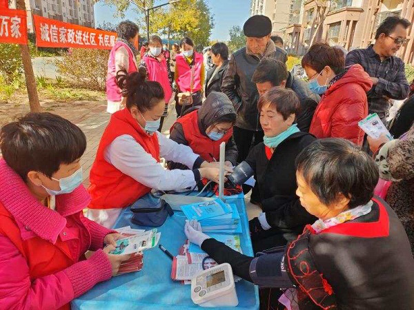
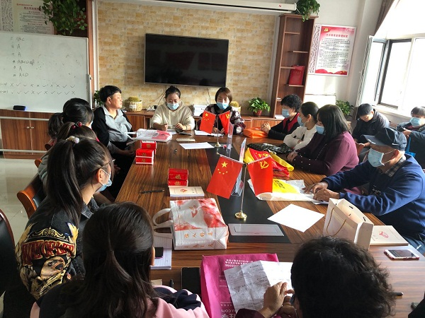
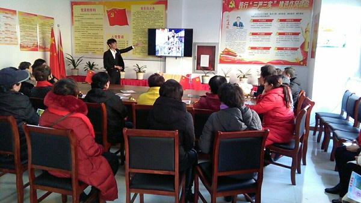
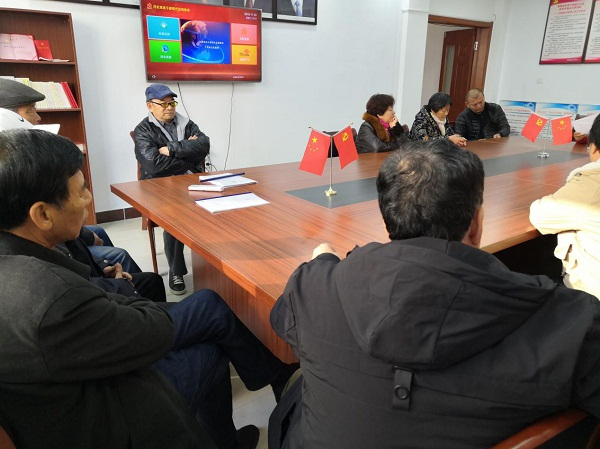

路南区梁家屯路街道办事处开展全民终身学习周活动
浏览次数：46 发布时间：2020年11月17日
根据《唐山市2020年全民终身学习活动周实施方案》要求，结合路南区梁家屯路街道辖区实际情况，各个社区积极组织开展关于2020年全民终身学习活动周宣传教育活动,并取得了圆满成功，有效推进了社区居民终身学习活动的蓬勃发展。

11月2日，尚智社区开展健康义诊活动，提供免费量血压、疾病咨询、健康讲座等服务。前来问诊的居民络绎不绝，社区居民在工作人员的合理安排下排队量血压、咨询护牙健康知识，医生们尽心尽责为前来问诊的居民答疑解忧。

11月6日，尚平社区开展2020年全民终身学习活动周，30余人参加活动。全体社区工作人员以身作则，带头学习，集体学习与自学相结合，定期学习与不定期学习相结合，引领社区居民养成读书学习好习惯。

11月6日，尚德社区开展“发展全民健康学习 推进和谐社区建设”活动。活动以其鲜明的主题、灵活的形式、丰富的内容及显著的成果受到了群众好评，在全社区营造人人皆学、时时能学、处处可学的浓厚氛围，使终身学习理念进一步深入人心。
11月6日，尚诚社区组织党员开展“送党章 学党章 遵党章”主题活动。活动现场，社区党总支书记将新《中国共产党章程》一一送到党员们手中，并对党章中新修改和增加的内容进行解读。社区老党员王阿姨在接到新党章后感慨不已，表示今后要在深入学习党章基本内容的基础上准确把握其精神实质，以党章为标尺，履行好党员的义务和责任，充分发挥好党员的先锋模范作用。
11月7日，尚安社区党总支组织社区党员群众和工作人员在二楼图书室开展了“阅读分享座谈会”主题活动，由社区党总支书记为大家分享了《非暴力沟通》这本书。此次读书分享会活动受到了大家的一致肯定，提高了社区居民的思想认识，加强了社区凝聚力和战斗力。

11月9日，尚义社区在社区二楼会议室组织社区工作人员及部分党员开展老年人冬季养生健康教育知识讲座。主讲人从冬季气候特点出发，用通俗易懂的语言针对老年人冬季容易引发的疾病、各种疾病的表征和如何预防疾病等各个方面，详细讲解了有关老年人的饮食、睡眠、生活等健康保健知识。

11月10日，尚善社区开展“学习新《党章》进入新时代”主题活动。通过对新《党章》的学习，党员们不仅受到了党的政治理论熏陶，更对党的十九大精神有了进一步的理解。大家纷纷表示要在不断的学习中提高自己的能力，争做合格党员，努力实现社区建设与时俱进、和谐发展。
供稿：路南社区教育分院
责任编辑：张启新